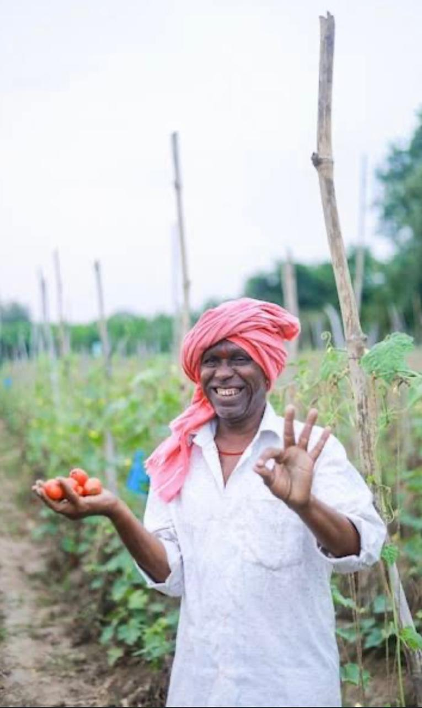
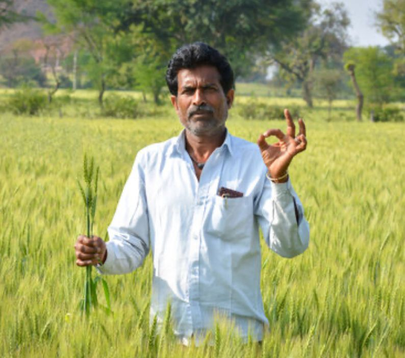
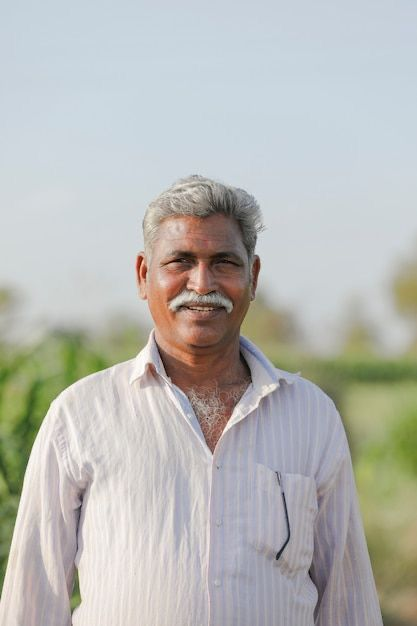
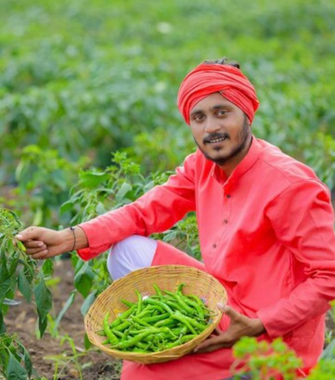

AgriLink is a transparent platform where farmers and customers connect directly — promoting fair trade, sustainability, and trust in every transaction.

Cultivation:
Seasonal Vegetables (Potato, Tomato, Cauliflower) and Mustard. He relies heavily on rented tractors and machinery (Custom Hiring Centers).
Production:
120 Quintals/Acre (Above Average)

Cultivation:
Follows the traditional paddy cultivation method using Swarna variety seeds during the Kharif season. Practices puddling and transplanting, supported by drip and canal irrigation. Uses organic manure along with balanced fertilizer application for soil health.
Production:
25 Quintals/Acre (Excellent Yield)

Cultivation:
Follows the traditional south Indian cropping pattern: Kharif (Monsoon) crop is Paddy (Rice) and Rabi (Winter) crop is Wheat. Relies on canal and occasional tube well water. Uses traditional seeds and a fixed schedule for fertilizers.
Production:
55 Quintals/Acre (Stable Yield)

Cultivation:
Follows a modern hybrid cultivation approach with drip irrigation. Grows the Teja variety of red chilies during the Rabi season. Uses mulching to retain soil moisture and applies organic compost to enhance spice quality and yield.
Production:
80 Quintals/Acre (High Value)